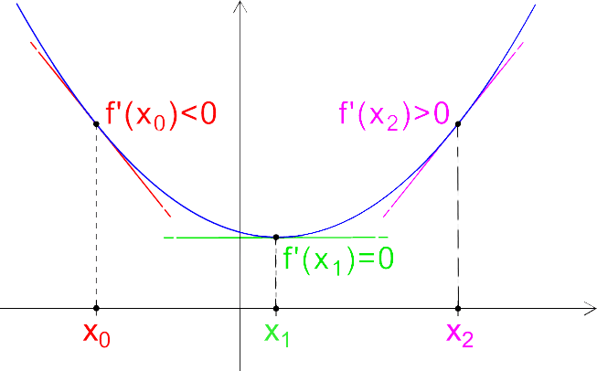

Lo studio della derivata di una funzione nasce inizialmente per risolvere problemi geometrici, ossia per trovare le seguenti informazioni sulla funzione: crescenza, decrescenza, concavità, convessità, asintoti, flessi ( crescenti o decrescenti ), punti di massimo, punti di minimo. Tuttavia, le applicazioni sono molteplici. Oggi le derivate sono utilizzate praticamente in discipline di ogni campo del sapere, ad esempio, nell’osservazione astronomica possiamo rilevare le variazioni di luminosità di una stella, di posizione di un pianeta. In fisica possiamo osservare le variazioni delle grandezze cinematiche, termodinamiche, elettromagnetiche. Ma tutte le scienze in generale hanno a che fare con le variazioni: di popolazioni (biologia), di prezzi (economia), di parametri vitali (medicina).
|
Verso la fine del XVII secolo 2 grandissimi scienziati, il tedesco Gottfried Wilhelm Leibniz (1646-1717) e l'inglese Isaac Newton (1642-1727), si contesero il primato di chi avesse dato origine all'analisi infinitesimale.
In realtà, le vere origini di questa importantissima branca della matematica sono molto più antiche: i ragionamenti di Zenone d'Elea (molto celebre per il paradosso di Achille e la tartaruga), le dimostrazioni di Eudosso, i calcoli di Archimede e, successivamente, i lavori di Cavalieri, Galilei, Torricelli, Pascal e Fermat, furono assolutamente determinanti per innestare le condizioni necessarie allo sviluppo di questa nuova disciplina, che inizialmente, prese la denominazione di Calcolo sublime.
Newton aveva introdotto il metodo delle flussioni per risolvere questioni di natura fisica, come il problema della velocità istantanea, mentre Liebniz aveva utilizzato il metodo delle differenze infinitesime per risolvere questioni specificamente matematiche, come il problema della tangente a una curva.
I 2 scienziati si erano scambiati, nella prima fase, diversi commenti sull'argomento, e ad avvalorare tale ipotesi concorreva il fatto che Liebniz aveva soggiornato a Londra nel 1673, e pertanto era sicuramente entrato in contatto con i lavori di Newton.
Vennero lanciate durissime accuse nei confronti del tedesco.
Su insistenza dello stesso Leibniz, la Royal Society nominò una commissione d'inchiesta per dirimere la questione: l'esito finale (nel 1712) diede ragione a Newton: Liebniz fu accusato di spudorato plagio.
Con ogni probabilità, Newton, in qualità di presidente della Royal Society, non fu estraneo al verdetto della commissione.
Successivamente Lagrange, in particolare, partendo dalle idee di Euler sembra essere stato il primo ad usare la dizione “funzione derivata” ed ad adottare il simbolo f' per indicarla.
|

|
|
Si definisce derivata prima(ƒ') della funzione ƒ di un punto x0,
il limite del rapporto incrementale(Δy/Δx) per Δx che tende a zero (Δx→0),
a condizione che il limite esista e che sia finito.
La derivata di una funzione f(x) in un punto x0 è il valore del coefficiente angolare della retta tangente alla curva nel punto, cioè la tangente trigonometrica dell'angolo formato dalla tangente in un punto della curva di equazione y=f(x) e l'asse delle ascisse. (figura 1) Se la derivata di una funzione f in un punto x0 è f(x)=0, la retta tangente al grafico della funzione y=f(x) è parallela all'asse delle ascisse, mentre se il limite mediante cui si calcola la derivata in un punto x0 è infinito(∞)la retta tangente al grafico della funzione f(x) è parallela all'asse delle ordinate(figura 2). La funzione derivata si ricava con una serie di operazioni algebriche note come regole di derivazione( Tabella derivate principali ), applicabili universalmente a tutte le funzioni derivabili. Nel caso di funzioni di più variabili la tangente in un punto alla curva della funzione non è unica, ma varia a seconda della direzione scelta. Non si può più quindi definire una sola funzione delle stesse variabili indipendenti che renda conto della pendenza del grafico della funzione in un punto: si ricorre allora alle derivate parziali della funzione, cioè ai coefficienti angolari di tangenti considerate lungo direzioni parallele agli assi che rappresentano le variabili indipendenti. |

*figura 1

*figura 2
|
{kind=link}
|
Se facciamo tendere h a zero, cioè se attribuiamo all'incremento valori sempre più piccoli, il punto Q si avvicinerà sempre di più al punto P, quindi, la retta secante per PQ tenderà a diventare la retta tangente alla funzione nel punto P. Quindi, il coefficiente angolare della retta per PQ, che corrisponde al rapporto incrementale, tenderà sempre di più ad avvicinarsi al coefficiente angolare della retta tangente al grafico in P; sapendo che il limite del rapporto incrementale per (h→0) è uguale alla derivata della funzione nel punto x0. Possiamo affermare che il limite del rapporto incrementale, o la derivata di una funzione nel punto x0 , è il coefficiente angolare della retta tangente al grafico di y = f(x) nel punto di ascissa x0. |
*figura 3
|
|
Qualora il limite del rapporto incrementale(Δy/Δx) per Δx che tende a zero (Δx→0) non esista o esista, ma sia infinito, allora siamo in presenza di un punto di non derivabilità per la funzione f(x). A seconda della ragione per la quale il limite suddetto non esiste. Vanno dapprima calcolati i limiti destro e sinistro della funzione derivata prima nel punto x0; possono allora presentarsi i seguenti casi: Se i due limiti esistono finiti ma sono diversi, o se uno dei due limiti è infinito e l’altro no, in x0 si ha un punto angoloso (figura 4) Se i due limiti sono entrambi uguali a +∞ o -∞, in x0 si ha un flesso a tangente verticale(figura 5) Se i due limiti sono uno +∞ e l’altro -∞, in x0 si ha una cuspide(figura 6) |
*figura 4
|
*figura 5
|
*figura 6
|
|
Sito creato da Grieco Giovanni
Classe V°C Liceo scientifico-opzione scienze applicate Anno scolastico 2021/2022 |